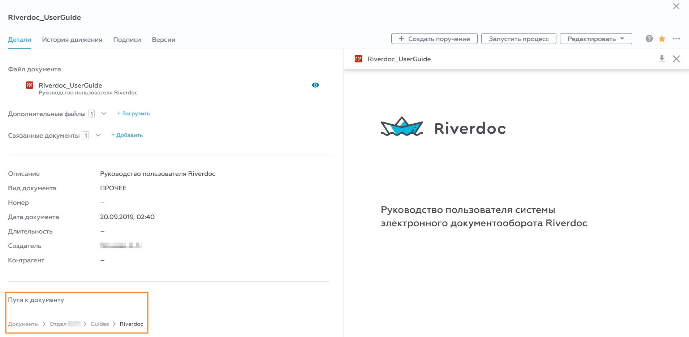
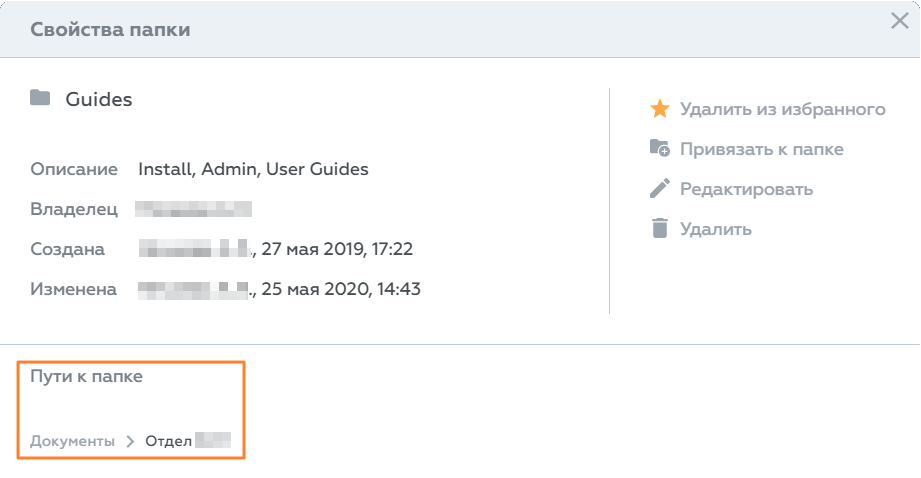

В Riverdoc есть возможность привязать документ или папку к нескольким папкам. Это позволит создавать и поддерживать документы в актуальном состоянии из одной папки без избыточного копирования.
Пример:
Все должностные инструкции (ДИ) компании хранятся в папке "Должностные инструкции". Ответственный за ДИ размещает документ "ДИ_Ведущий разработчик" в папке "Должностные инструкции", а документ привязывает к папкам нужных отделов (например, "Отдел web-разработки" и "Отдел desktop-разработки"). Если должностную инструкцию потребуется обновить, достаточно будет изменить файл документа в одной папке (любой), не загружая обновлённый файл во все папки.
Правила привязки/отвязки
▪Минимальные права доступа для привязки/отвязки объекта:
•"Перезапись версий" (Write) – на папку, к которой пользователь привязывает или отвязывает объект;
•"Чтение" (Read) – на объект, который пользователь привязывает или отвязывает.
▪Если папка, к которой пользователь привязывает объект, связана (залинкована) с другими папками, то объект автоматически линкуется со всеми связанными папками.
Пример: если папка "Folder 1" связана с папками "Folder 2" и "Folder 3", то после привязки документа "Document 1" к "Folder 1", документ автоматически добавится в папки "Folder 2" и "Folder 3".
Как привязать документ/папку
Привязать объект к папке можно из списка документов и папок, а также документ можно привязать из карточки документа, папку – из свойств папки.
1.Нажмите значок 2.В меню выберите команду Привязать к папке. 3.В открывшемся окне выберите нужную папку в дереве архива или воспользуйтесь поиском. 4.Наведите курсор мыши на папку, к которой хотите привязать объект, и нажмите кнопку Привязать сюда. В результате система проверит право доступа пользователя к выбранной папке и, если оно не ниже "Перезапись версий" (Write), создаст ссылку на папку (привяжет объект к папке). |
1.Нажмите значок 2.В меню выберите команду Привязать к папке.... 3.В открывшемся окне выберите нужную папку в дереве архива или воспользуйтесь поиском. 4.Наведите курсор мыши на папку, к которой хотите привязать объект, и нажмите кнопку Привязать сюда. В результате система проверит право доступа пользователя к выбранной папке и, если оно не ниже "Перезапись версий" (Write), создаст ссылку на папку (привяжет объект к папке). |
1.В окне свойств папки нажмите Привязать к папке. 2.Откроется дерево электронного архива (окно Привязать к папке). 3.В открывшемся окне выберите нужную папку в дереве архива или воспользуйтесь поиском. 4.Наведите курсор мыши на папку, к которой хотите привязать объект, и нажмите кнопку Привязать сюда. В результате система проверит право доступа пользователя к выбранной папке и, если оно не ниже "Перезапись версий" (Write), создаст ссылку на папку (привяжет объект к папке). |
Поиск в дереве электронного архива
При выборе папки привязки можно воспользоваться поиском:
Привязка объекта. Поиск папки назначения
В строке поиска начните вводить название папки, далее выберите папку из предложенного списка. При поиске регистр букв не имеет значения, раскладка клавиатуры имеет значение.
Совет. Если в результатах поиска содержатся несколько папок с одинаковыми названиями, и вы не уверены, к какой именно папке нужно привязать объект, нажмите значок  справа от кнопки Привязать сюда. Откроется окно свойств папки, в котором можно посмотреть полный путь к папке, дату создания и владельца папки.
справа от кнопки Привязать сюда. Откроется окно свойств папки, в котором можно посмотреть полный путь к папке, дату создания и владельца папки.
Как отвязать документ/папку
 Примечание. Невозможно отвязать объект, который привязан только к одной папке.
Примечание. Невозможно отвязать объект, который привязан только к одной папке.
Отвязать объект от папки можно из списка документов и папок, также документ можно отвязать из карточки документа, папку – из свойств папки.
1.Нажмите значок 2.В меню выберите команду Отвязать от "%название_папки%". Riverdoc выполнит проверки: •не является ли эта привязка единственной; •хватает ли у пользователя прав. Если условия проверки выполнены, система отвяжет объект от папки. Если прав не хватает или объект привязан только к одной папке, система выдаст ошибку. |
1.Перейдите в область Пути к документу и убедитесь, что документ привязан более чем к одной папке. 2.Наведите курсор мыши на путь, от которого хотите отвязать, нажмите кнопку Отвязать. В результате система проверит право доступа пользователя к выбранной папке и, если оно не ниже "Перезапись версий" (Write), выполнит команду. Если прав не хватает, система выдаст ошибку "Обратитесь к владельцу папки за правами доступа".
|
1.Перейдите в область Пути к папке и убедитесь, что документ привязан более чем к одной папке. 2.Наведите курсор мыши на путь, от которого хотите отвязать, нажмите кнопку Отвязать. В результате система проверит право доступа пользователя к выбранной папке и, если оно не ниже "Перезапись версий" (Write), выполнит команду. Если прав не хватает, система выдаст ошибку "Обратитесь к владельцу папки за правами доступа".
|
 Важно. При удалении объекта он физически удаляется и, соответственно, отвязывается от всех папок, к которым привязан. При отвязке удаляется только из папки, от которой отвязали.
Важно. При удалении объекта он физически удаляется и, соответственно, отвязывается от всех папок, к которым привязан. При отвязке удаляется только из папки, от которой отвязали.
Просмотр путей документа или папки
Просмотреть пути размещения документа можно в карточке документа → область Пути к документу.
 |
Просмотреть пути размещения папки можно в свойствах папки → область Пути к папке.
 |
Чтобы перейти к содержимому любой папки пути, нажмите ЛКМ на названии необходимой папки.